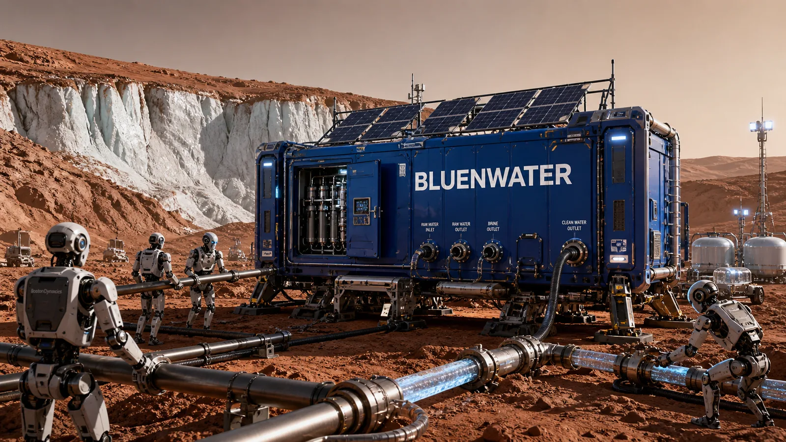
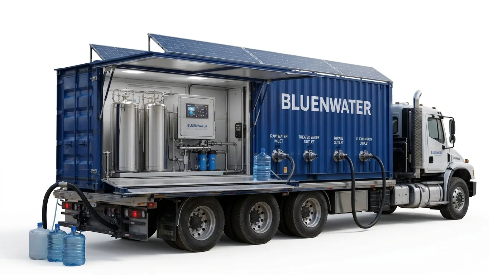
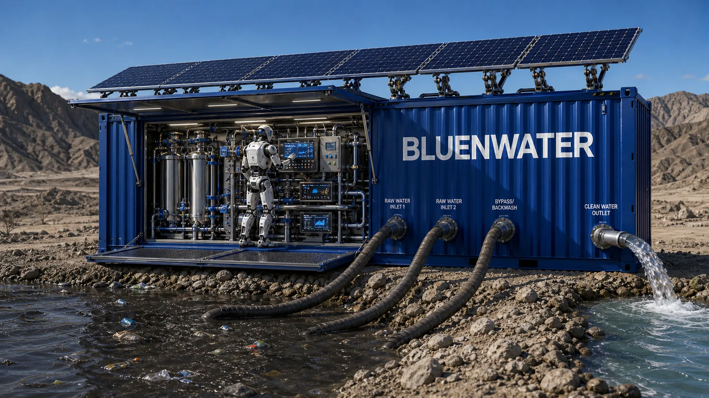

BLUE BOX
移動式水インフラ
BLUE BOXは、災害、戦争、遠隔地、インフラが不足する環境で、現地の水源を利用可能な水に変換するために設計されています。


災害対応Emergency and field deployment concept

製品プラットフォームContainerized water purification module

技術モジュールRaDX / AQUACOM integrated process